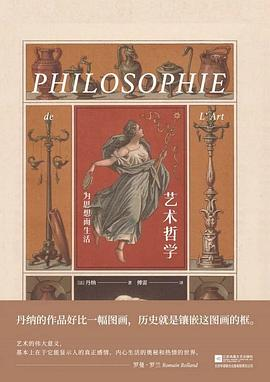

《艺术哲学》

总体观点
19世纪法国著名实证主义美学家、历史学家丹纳（Hippolyte Taine）享誉世界的代表作，傅雷先生历经数载心血译出的传世中文经典名著。
核心命题：彻底打破唯心主义将艺术归为神秘灵感的神学迷思，提出震动欧洲学术界的实证三大法则——‘种族（Race）、时代（Moment）与环境（Milieu）’。
全书以丰富的实证史料与生动的时代还原，深度解剖古希腊雕塑、意大利文艺复兴绘画与尼德兰风俗画三大巅峰，揭示艺术品是特定土壤与精神气候下必然盛开的生命果实。
核心观点
-
1. 艺术品不是孤立的存在，而是社会母体与时代风俗的产物
理解一件艺术品，绝不能只盯着画布本身；必须把它放回艺术家全部作品、所处的艺术宗派以及当时社会的精神风俗之中。
孤立看莎士比亚的血腥悲剧会感到荒诞；但若放回伊丽莎白一世时期海盗探险、宗教火刑与野蛮好斗的英国社会，一切就理所当然。 -
2. 种族、时代与环境三大法则决定了艺术品的一切核心特征
先天生理秉性（种族）、历史发展阶段（时代）与外部地理风俗制度（环境），如同物理重力一样不可抗拒地塑造着艺术形态。
日耳曼民族沉思内向的种族秉性、宗教改革后的清教时代，结合尼德兰湿润阴冷的地理环境，共同决定了伦勃朗画风的深沉凝重。 -
3. 艺术的真正目的是表现事物的主要特征，使之比在现实中更加昭彰
艺术绝非照相式死板模仿；艺术家的天职是用敏锐的心灵抓住事物最核心的本质特征，并通过形式提炼使之压倒次要细节。
狮子在动物园里可能显得温顺昏睡，但真正的雕刻家通过强化其紧绷的爪牙肌理与暴怒鬃毛，把百兽之王的凶猛本质凸显到极致。 -
4. 古希腊雕塑源于温和的地中海气候、民主城邦与健康的肉体崇拜
晴朗的气候、对体育竞技的狂热以及毫无宗教原罪感的肉体自豪，共同催生了奥林匹亚神圣健美的裸体雕像。
古希腊青年常年在烈日下全身赤裸涂油摔跤竞技，全民都具备鉴赏匀称肌肉的眼光，雕刻家无需凭空想象即可获得完美模型。 -
5. 意大利文艺复兴绘画是充沛精力、世俗享乐与自发热情的辉煌结晶
文艺复兴时期的意大利人未被北方禁欲神学压抑，亦未被现代法治驯服；野性充沛的生命本能直接绽放为达·芬奇与拉斐尔的人体盛宴。
切利尼等艺术家一方面身怀绝技铸造黄金器皿，另一方面腰佩长剑随时在街头决斗行凶，充沛强悍的野性活力直接注入艺术杰作。 -
6. 尼德兰绘画的务实逼真源于低地国家湿润泥土与市民商业自治
终年潮湿多雾的地理环境促成了对家庭室内温暖的渴望，勤劳重商的清教徒市民阶级催生了伦勃朗与维米尔的静物与平民风俗画。
荷兰人克服了西班牙暴政与北海倒灌，对自己用双手开垦的土地与整洁厨房满怀爱意，促使画家热烈描摹牛奶女仆与扫地农妇。 -
7. 艺术品价值的高下取决于其表现特征的重要程度与效果集中程度
评判艺术品高下有客观尺度：所表现的特征越深刻恒久、越有益于生命延续，且画面所有构图色彩越高度统一服务于该特征，作品便越伟大。
歌德的《浮士德》之所以伟大，是因为它深刻表现了人类永不满足、永远探索进取的根本特征，且全书结构无一处不为此核心服务。
全书结构
-
第一编 艺术品的本质及其产生（第1-2章）
艺术品隶属于艺术家、宗派与时代精神风俗；艺术的本质是表现事物的显著特征；精神气候的选择淘汰规律。
如同植物的分布取决于土壤温度一样，某个时代只孕育适合该时代精神气候的艺术，不合时宜的作品必遭淘汰。 -
第二编 意大利文艺复兴期的绘画（第1-6章）
意大利绘画的完美人体特征，文艺复兴时期的自然环境、活跃风俗与充沛精力，画派兴衰与时代变迁。
拉斐尔《雅典学院》将古希腊哲人齐聚一堂，每个人物举手投足均展现出健美高贵的体魄，是意大利古典盛期的最完美写照。 -
第三编 尼德兰的绘画（第1-2章）
永久原因（低地平原、潮湿气候、日耳曼民族性）与历史时期（从勃鲁盖尔民间风俗到伦勃朗光影的黄金时代）。
维米尔《倒牛奶的女仆》中，阳光从粗糙砖墙的窗棂倾泻在朴素的陶罐上，将平凡的日常生活瞬间升华为永恒的神圣仪式。 -
第四编 希腊的雕塑（第1-2章）
永久原因（地中海明朗风光、城邦民主、裸体竞技风尚）与历史时期（从神庙祭祀到古典希腊雕塑的巅峰与式微）。
菲狄亚斯主持建造巴特农神庙檐壁浮雕，青年骑士与少女祭司行列洋溢着健康自信的城邦公民精神。 -
第五编 艺术中的理想（第1-4章）
艺术价值评判的客观标尺：特征的重要程度、有益程度以及艺术家运笔效果集中的完美程度。
但丁《神曲》以极其严密的诗韵与九重地狱炼狱天堂结构，将中世纪天主教宇宙观集聚于一体，达到效果集中的极致。